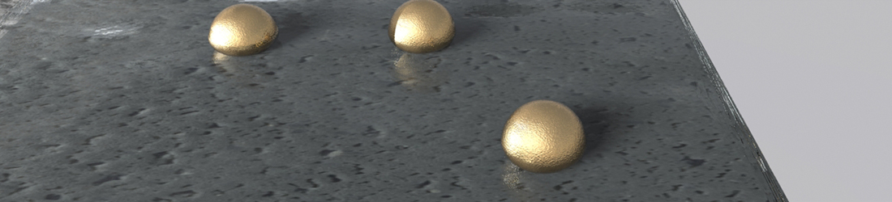
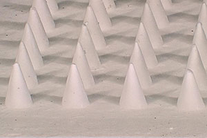

皮膚は人体最大の臓器であり、外部からの生体の保護を果たすとともに、生体情報の取得や摂動付与（薬剤投与や電気刺激など）が可能な生体と外部のインターフェイスとして機能しています。皮膚を介した情報・物質の出し入れを効率化するための材料を開発し、生体への応用を展開しています。
多孔質マイクロニードル
マイクロニードルとは、数百µm程度の長さの針を二次元状に多数配列させた構造であり、皮膚組織液の採取や皮膚内への投薬を効率的かつ非侵襲に行うことができます。私たちは、多孔質樹脂からなるマイクロニードルを作成することで、毛細管現象による迅速な皮膚組織液採取と、皮膚刺入に十分な機械的強度を両立することに成功しました。これを用いて、センシングや投薬への展開を試みています。(L. Liu et al., RSC Advances 2016)
微小液滴収集フィルム
濡れ性のパターニングによって、液滴を収集するフィルムを開発し、汗の収集への展開を図っています。 （H. Kai et al., RSC Advances, in press.）。